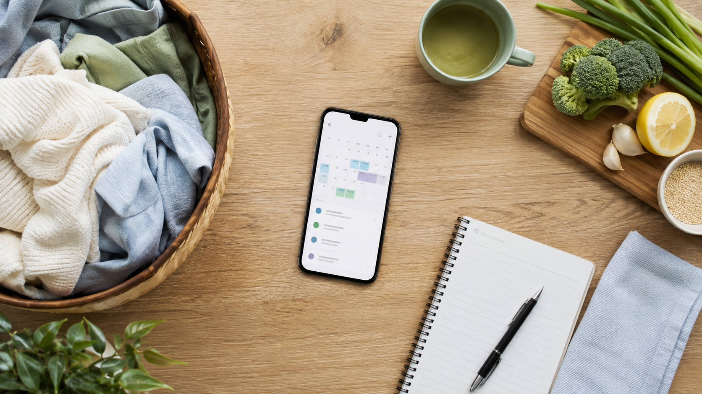

本稿は公式発表を読んだ紹介記事です。実機・実サービスは未使用で、2026年9月30日の提供開始前情報を扱います。
無料で試せるが、回数と機能で料金が変わる
月30回の無料プランから、月1,980円・1,200回のゴールドまで4段階。対象家電所有者にはノーマルの6カ月無料体験も案内されています。
質問に答えるだけではない
家電設定、タスク管理、AI対話、暮らしへの提案を一つにまとめ、家事の段取りまで支えるのがNIAHの狙いです。
具体的には、こんな一日です
「今日やることは？」と聞くと、家族が買い物メモへ入れた洗濯洗剤、午後の雨予報、花粉の時期に合う空気清浄機の「花粉」モードをまとめて知らせる利用例が公式サイトで紹介されています。
「どう洗えばいい？」と相談すると、対応洗濯機の「温水極め洗い」コースと、投入前に水で軽くすすぐ手順を案内。困りごとをそのまま伝え、説明書からコース名を探す手間を減らすイメージです。
「今夜も暑い？」という相談に、夜の気温予報をもとにエアコン設定を案内する例があります。対応機器と必要な設定がそろっていることが前提です。
使いかけのひき肉の保存方法を答えたあと、以前の会話から家族が喜んだ煮込みハンバーグを提案。単発の回答ではなく「暮らしを覚える」と表現される部分です。
家族共有なら、一人が登録した「洗剤を買う」という予定を、別の家族が自分のスマートフォンで確認できます。ただし有料プランが必要で、登録ユーザー以外は最大3人までです。これらはシャープが示した利用例であり、すべての家電や家庭で同じ提案・自動操作が保証されるわけではありません。

AI生成の編集用イメージ。実画面や実製品ではありません。
52機種と、利用条件を確認
対象は提供開始時点で52機種。対応型番、スマートフォン、ネット、COCORO MEMBERS、最新版アプリと機器登録が必要です。
正確さとプライバシーの線引き
リアルタイム検索には対応せず、生成AIの回答は常に正確とは限りません。生活情報を扱うため、利用規約とプライバシーポリシーも確認します。
ろぶーはこう見る
家電を増やすより、家電の間に相談窓口を置くサービス。まず無料枠で必要な機器だけをつなぎ、答えを確かめながら使うのがよさそうです。
確認した公式情報
情報確認日：2026年9月4日（日本時間）。本稿は実機レビューではなく、公開日時点の公式情報をもとに構成しています。提供条件や料金は変更される場合があります。